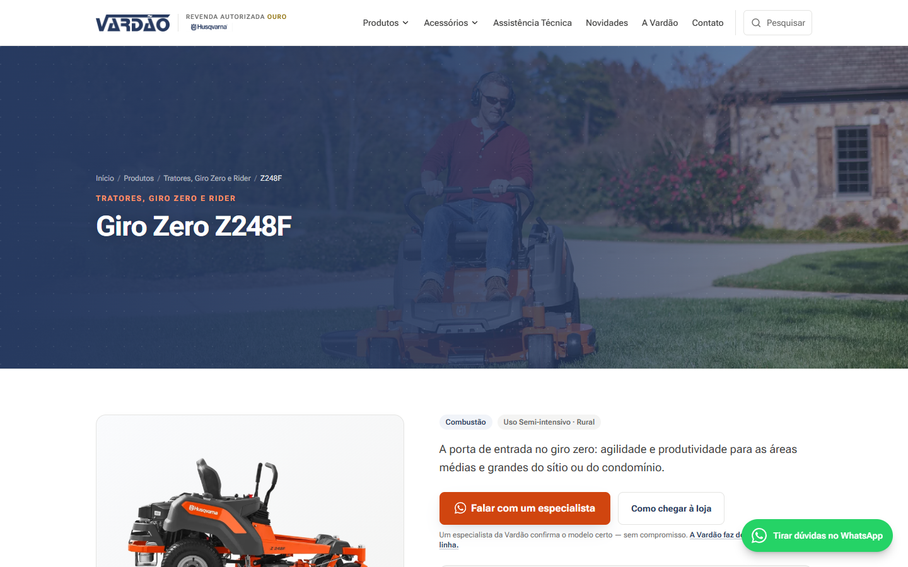
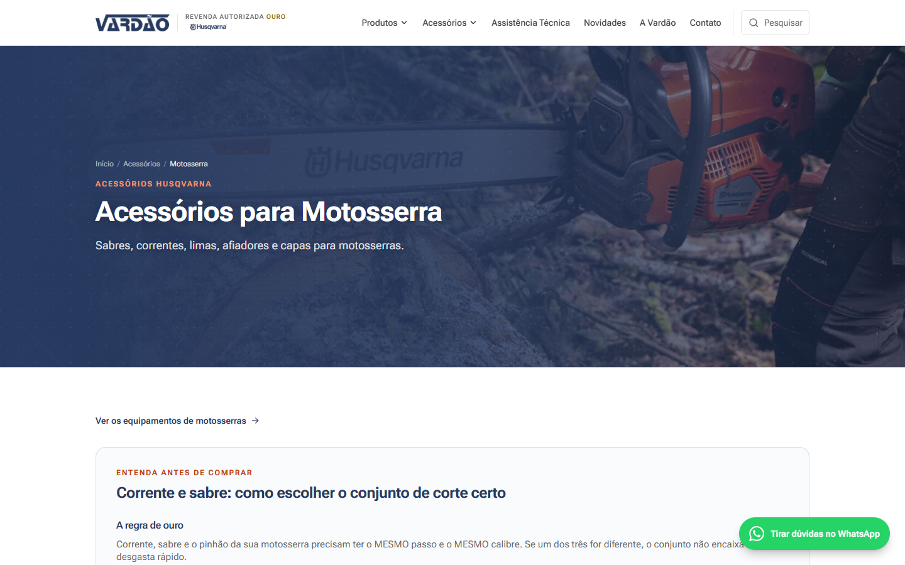
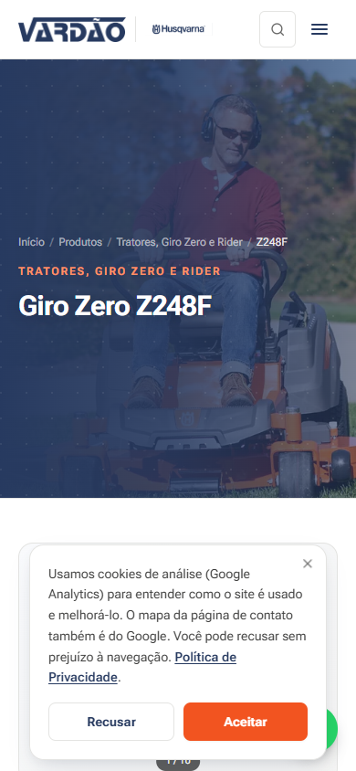

Vardão Máquinas website
The public website of the company where I work: a catalog of about 200 pages that helps customers find the right equipment and the right part, and takes the conversation straight to WhatsApp. It complements Vardão Central, which runs the operation from the inside.
Open the website
The problem
People who want a lawn tractor, a chainsaw or a spare part search on Google before going to the store. A website with a few pages does not show up in that search, and a catalog copied from a PDF does not answer what customers really want to know: which model suits my land, and which accessory fits my machine. A wrong accessory means a return and lost trust.
The solution
A website where every product, every accessory group and every article has its own page, generated from typed data, with the right title, description and structured data for search. Visitors can search inside the site, read a guide before buying and, on any page, talk to a specialist with the message already filled in.
What the site does
Catalog by category
Gas-powered, battery, robotic mowers and tractors. Each page shows the recommended use and leads to the specialist, so customers do not have to hunt for a contact.
The right accessory for the model
The guide matches accessories to the machine model and explains the rule before the purchase, such as the same pitch and gauge on a chainsaw chain and bar.
Search inside the site
One search across products, accessories and articles, ranked by relevance and with no external service.
Articles that answer questions
38 comparison and buying-guide articles, each with a table of contents, a reading progress bar and a news feed.
Helper calculators
Tools that help choose: the right robotic mower, the right mower for the size of the area and the payback of the battery line.
WhatsApp with context
Eleven kinds of pre-filled message, depending on what the customer was looking at, so the salesperson joins the conversation already knowing the topic.
Screens


Decisions
Pages generated from data
Products, accessories and articles live in typed TypeScript data files, and a single template page generates each route at build time. Adding a new product means filling in an object, and the sitemap, title, structured data and navigation follow on their own. The gain is consistency: none of the 200 pages depends on someone remembering to configure SEO.
Never mix up the wrong accessory
The same principle as the counter in Vardão Central: suggest only when there is certainty. In categories where every model accepts the same accessory, the rule is general; in the others, such as tractors and zero-turn mowers, matching is done only by model code, never by name similarity. It is conservative on purpose: I would rather show no accessory than the wrong one.
Cookies with real consent
Google Analytics and the Google map only load after the visitor accepts, and consent starts as denied. Declining takes nothing away from the site. The choice is saved in the browser and can be changed later from a link in the footer.
Security in the headers
The site sends a content security policy that allows only what it really uses, plus protection against being embedded in other pages and against file-type sniffing. One limit is documented in the code: Next injects scripts without its own identifier, so the policy has to accept inline scripts. In development it is more permissive than in production.
WhatsApp with the question already asked
Every call to WhatsApp carries what the customer was looking at: the product, the category, the accessory or the article. That replaces "hi, how are you?" with a conversation that already starts on the topic, and the salesperson knows which page the contact came from.
Numbers
Counted on the live site's sitemap and in the code on 10/31/2026.